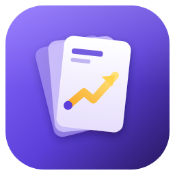

ทั่วไป
เปิดตัวเลือก "เกิดที่เดิมอัตโนมัติ" ของเกมให้ทุกบัญชี (ตาย ตอน AUTO ในแมพฟิลด์ = ลุกที่เดิม เสีย Gold ตามเกม) · ตายแล้วโปรแกรมกดปุ่ม "เกิดที่เดิม" ให้ทันที (ไม่ถึง 1 วิ ไวกว่าที่เกมทำเองราว 3 วิ) ใช้ได้ทั้งแมพบอสและบอสโลกที่เกมไม่ลุกเอง
ค่าหัวรายวันใบไหนครบแล้ว กดรับรางวัลให้ (ฟรี) ทุกบัญชี · ส่วนการเดินไปทำค่าหัวเอง กดปุ่ม "📜 ทำค่าหัวอัตโนมัติ" ของแต่ละบัญชีใน Dashboard
AUTO เปิดอยู่แต่ไม่ได้ตีอะไรเลย 3 นาที (ติดกำแพง, AUTO หลุด) ปิดแล้วเปิด AUTO ใหม่ให้ · ไม่เกิน 4 ครั้งต่อชั่วโมง · ไม่ทำถ้าคุณปิด AUTO เอง หรือตอนเดินทาง/ตีบอสโลก · ฟรี
ปุ่ม "🔎 หาที่ฟาร์มคุ้มสุด" ในแต่ละบัญชี ลองฟาร์มจริงแมพละ นาที (นานขึ้น = แม่นขึ้น) · ตายเกิน 3 ครั้งในแมพไหนข้ามแมพนั้น (ถ้าเกิดที่เดิมได้ด้วย Premium ข้ามเมื่อเกิน 8 ครั้ง เพราะเวลาที่เสียตอนตายถูกหักในกำไรที่วัดอยู่แล้ว)
ตอน AUTO ฟาร์ม ถ้ามีผู้เล่นอื่นในวง AUTO ตั้งแต่ คน นาน นาที ย้ายไป Channel ที่คนน้อยสุดของแมพเดียวกัน (ไม่เข้า PvP) เดินกลับจุดเดิมแล้วเปิด AUTO วงเดิม · ห่างกันอย่างน้อย 10 นาที · ไม่ทำตอนทำค่าหัว/ตีบอสโลก
ระหว่างล่าค่าหัว ปิดมอนชนิดอื่นในตั้งค่า Auto ของเกม (เป้าหมายในแมพนี้) ให้ AUTO ตีแค่มอนในใบค่าหัว เสร็จเร็วกว่า · ก่อนออกจากแมพและตอนจบเปิดกลับให้เหมือนเดิม · ไม่แตะบอส
ส่งทุกบัญชีที่ออนไลน์เข้าสนามก่อนบอสเกิด 1 นาที (เผื่อเวลาวาร์ป) รอบอสเกิดแล้วเดินไปหา เปิด AUTO (ฟรี ตายไม่เสียอะไร) · ตายแล้วกดเกิดที่เดิมให้ทันที · ปุ่ม "⚔ ไปตีทุกตัว" ในช่องบอสของ Dashboard ใช้ได้เสมอ
เฉพาะบัญชีที่ BinderDash ส่งไป · ออกจากสนามแล้วเปิด AUTO ฟาร์มต่อ
ตาย 4 ครั้งใน 2 นาที (เกิดที่เดิมแล้วโดนรุมตายซ้ำ เสีย 5,000 G ทุกครั้ง) = ปิดเกิดที่เดิมของบัญชีนั้น 10 นาที ตายครั้งต่อไปกลับเมืองตามปกติ แล้วแจ้งเตือน
ยาในช่องลัด (Q/E/R) เหลือไม่เกินจำนวนที่ตั้ง (นับทุกเกรดรวมกัน) จะกดซื้อทีละ 99 ขวดตามจำนวนรอบ ซื้อซ้ำได้อีกหลัง 10 นาที
ซื้อเมื่อเหลือ ขวด · รอบ: × 99 ขวด · เก็บ Silver ไว้อย่างน้อย
ถ้าปิด จะอยู่แค่ไอคอนมุมขวาล่าง กดเปิด Dashboard ได้จากไอคอนหรือ Ctrl+Shift+D
เกมโหลดและเล่นอยู่เบื้องหลัง ไม่เด้งหน้าต่างขึ้นมา (เครื่องลื่นกว่า เปิดหลายบัญชีพร้อมกันได้สบาย) · กด "ไปที่เกม" เมื่ออยากดู
โหลดหน้าเกมใหม่ให้เมื่อเกมตัดการเชื่อมต่อ, หลุดนานเกิน นาที, หน้าเกมค้างหรือพัง · เกมล็อกอินและเปิด AUTO ต่อเอง · ไม่เกิน 5 ครั้งต่อชั่วโมงต่อบัญชี · ไม่ทำเมื่อถูกเปิดที่อื่น, ถูกทีมงานตัด, เกมขอยืนยันว่าเป็นคน หรือล็อกอินหมดอายุ (แจ้งเตือนแทน)
ใช้คู่กับ "เปิดทุกบัญชีตอนเปิดโปรแกรม" = เปิดคอมแล้วฟาร์มต่อเองได้เลย
ถ้าไม่เลือก จะเปิดแค่ Dashboard แล้วกดเปิดเองทีละบัญชี
ตัวเลือกเสริม
มีผลเมื่อเปิดโปรแกรมใหม่ ·
ออกจากระบบเกมทุกบัญชี ต้องเข้าสู่ระบบใหม่ หน้าเกมที่เปิดอยู่จะโหลดใหม่
เหมือน Ctrl+Shift+F5 ใน Chrome ไม่ได้ออกจากระบบ หน้าเกมที่เปิดอยู่จะโหลดใหม่
หน้าเกมที่ใช้ RAM เกิน MB จะโหลดใหม่ตอนไม่มีเรื่องผิดปกติ ทีละบัญชี (ไม่เกินครั้งละ 30 นาที) ตัวละครหลุดเกมแป๊บหนึ่งตอนโหลด
แจ้งเตือน
เด้งมุมจอ และไอคอน BinderDash มีจุดแดงจนกว่าเรื่องจะหาย คลิกเพื่อไปที่เกมบัญชีนั้น · บัญชีที่กำลังเล่นอยู่ (หน้าต่างเกมที่เปิดหน้าอยู่) ไม่เตือน
นับตอนการเชื่อมต่อกับเซิร์ฟเวอร์เกมปิดหมด
ไม่ได้ตีเลย นาที · นับเฉพาะตอนต่ออยู่และยังไม่ตาย (ระหว่างที่ยังอ่านการตีไม่ได้ จะใช้ "ไม่มีข้อมูลจากเกม" แทน)
ตั้งจำนวนได้ที่แท็บ "กระเป๋า" ใน Dashboard (กดที่ไอเทม) เช่น ยาน้อยกว่า 30
ระหว่างปิดปรับปรุง โปรแกรมลองโหลดใหม่เองทุก 2 นาที
ทุกครั้งที่การ์ดมอนดรอป
ใช้ราคาจริงจากตลาดกลางที่ผู้เล่นซื้อขายกัน (ราคาที่วางขายถูกสุด หรือราคาที่ขายได้จริงใน 14 วัน) ไม่ใช่ราคาร้าน NPC · ของดรอปมอนทั่วไป (ETC) และยาไม่นับ · แจ้งเมื่อมูลค่าตั้งแต่ Gold ขึ้นไป
ช่องด้านขวาของ dashboard แสดงอุปกรณ์ในกระเป๋าที่ราคาตลาดกลางตั้งแต่ Gold ขึ้นไป พร้อมปุ่มลงขาย
เมื่อเซิร์ฟเวอร์ประกาศว่าตัวละครของคุณได้ของระดับ Epic ขึ้นไป
คำนวณจากอัตราที่ใช้จริง แจ้งเมื่อจะหมดภายใน นาที
เตือนใกล้เต็มที่ % และเตือนเต็มที่ % (เต็มแล้ว AUTO เก็บของไม่ได้)
30 นาทีก่อน Premium ของบัญชีหมด
แจ้งก่อนเกิด นาที และตอนเกิดแล้ว (ทุกแมพ ข้อมูลจากกระดานบอสของเกม)
แจ้งก่อนเริ่ม (ใช้เวลาเดียวกับบอสสนาม) และตอนเริ่มสู้
อีเวนต์สุ่ม (Golden Hour, Lucky Find …), Hot Week และ Mother Lode · โบนัส EXP/ดรอป/Gold
ภารกิจ Pass ทำครบแล้วยังไม่กดรับ หรือจดหมายมีของ · วันละครั้งต่อบัญชี (และเมื่อมีเพิ่ม)
ไอเทมในหน้า "ตลาด" ราคาลงต่ำกว่า หรือขึ้นสูงกว่าที่ตั้งไว้ (ครั้งเดียวต่อการข้ามเส้น)
ดังตาม volume ของ BinderDash ใน Volume mixer ของ Windows
ถ้าไม่ขึ้น ดูที่ Settings ของ Windows › System › Notifications และปิด Do not disturb
Telegram
ส่งแจ้งเตือนเข้า Telegram ด้วย (ไม่บังคับ แจ้งเตือนของ Windows ยังอยู่เหมือนเดิม)
- ใน Telegram คุยกับ @BotFather พิมพ์
/newbotแล้วตั้งชื่อบอท จะได้ KEY มา - เปิดแชทกับบอทของคุณแล้วกด START (หรือส่งอะไรก็ได้ให้บอท)
- วาง KEY ด้านล่างแล้วกด "เชื่อมต่อ" บอทจะทักกลับมา
แจ้งเตือนที่เปิดไว้จะเด้งทั้งใน Windows และ Telegram
สั่งจากมือถือ: /status, /auto on|off, /sleep, /daily, /bosses, /events (/help ดูทั้งหมด) · รับคำสั่งจากแชทของคุณเท่านั้น · PC ต้องเปิด BinderDash อยู่
ข้อความแจ้งเตือน (ชื่อตัวละคร ข้อความกระซิบ) ผ่านเซิร์ฟเวอร์ของ Telegram · อย่าบอก KEY ให้ใคร · เลิกใช้แล้วกด "เลิกเชื่อมต่อ"
ข้อมูลในเครื่อง
login และการตั้งค่าเกมของทุกบัญชีอยู่ในโฟลเดอร์นี้
แก้ปัญหา
รวมเวอร์ชัน สถานะทุกบัญชี การตั้งค่า (ไม่มี KEY) และ log ล่าสุดไว้ในไฟล์เดียว ส่งให้ผู้พัฒนาตอนเจอปัญหา · ไม่มีข้อความแชทหรือรหัสผ่าน
บันทึกการทำงานของโปรแกรม (สูงสุดราว 4 MB)
สำหรับนักพัฒนา
ใช้ข้อมูลปลอมกับบัญชีที่ยังไม่เปิดเกม ไว้ดูหน้าตา Dashboard ไม่แจ้งเตือน
ใช้แมปข้อมูลเกม · ไฟล์อยู่ในเครื่องเท่านั้น อาจมีข้อมูลส่วนตัว ห้ามส่งให้คนอื่น
ไฟล์ที่บันทึกไว้
🧪 ทดสอบระบบกับเกมจริง
ไล่เช็คทุกระบบกับตัวละครที่เข้าเกมอยู่ ได้แก่ การอ่านข้อมูลเกม ของล็อค ราคาตลาด สิทธิ์ตลาด ยา เกิดที่เดิม และ DPS ที่คาดเทียบกับของจริง ไม่ย่อย ไม่ขาย และไม่ลงขายอะไร ผลเก็บเป็นไฟล์ในเครื่องเพื่อใช้พัฒนาต่อ
ต้องเข้าเกมอยู่
ซื้อยา 1 ขวดจากร้าน เพื่อเช็คการซื้อผ่าน HUD (Premium) หรือการซื้อตอนยืนใกล้ร้าน
รวมผลทดสอบ 5 ครั้งล่าสุด สถิติ 30 วัน และ log ของโปรแกรมเป็นไฟล์ .txt ไฟล์เดียวบน Desktop · ชื่อบัญชีและชื่อตัวละครถูกแทนด้วย "acc 1, acc 2…" ไม่มี token หรือรหัสผ่าน · ส่งไฟล์นี้ให้ผู้พัฒนาได้เลย
📊 เก็บสถิติไว้ใช้ปรับปรุง
ฆ่า/ชม. Silver/ชม. การใช้ยา การตาย การซื้อเอง และราคาตลาดที่ถามแล้วไม่ได้คำตอบ เก็บที่ logs/stats ในเครื่องนี้เท่านั้น ไม่ส่งออกไปที่ไหน
เกี่ยวกับ

แดชบอร์ดหลายบัญชีสำหรับ Binder Town: ดูทุกตัวละครในจอเดียว สั่งงานโดยไม่ต้องเปิดหน้าเกม และหาบิลด์ที่แรงที่สุดด้วยสูตรของเกมเอง
github.com/Bdev666/BB
-
โปรแกรมเช็กเวอร์ชันใหม่เองตอนเปิดและทุก 30 นาที ถามก่อนทุกครั้ง ไม่ต้องโหลดไฟล์ติดตั้งใหม่เอง
โปรแกรมแฟนเมดสำหรับเล่น Binder Town หลายบัญชี ไม่เป็นทางการ ไม่เกี่ยวข้องกับผู้พัฒนาเกม · อ่านข้อมูลอย่างเดียว ไม่คลิกหรือเล่นแทน